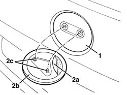
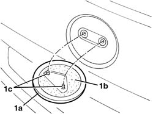

7055A83 BADGE ON TAILGATE - R.R.
- Path
- Procedures > 70 FITTINGS > 7055 MOULDINGS ON PROTECTIONS > 7055A EXTERIOR MOULDINGS > 7055A83 BADGE ON TAILGATE - R.R.
- Kind
- repair procedure (removal / refitting; the operation number is the code)
- Applies to
- all engines; all production periods
- Interactive page
- https://sloeber94.github.io/elrnDB-fMltpl/en/#/186003577
Applies to: all engines; production: da 06/04
 Removing
Removing
 Refitting
Refitting- Using a plastic blade, remove the badge (1a) unsticking the double-sided tape (1b) around the perimeter and releasing the centering pins (1c).

Applies to: all engines; production: da 06/04
Refitting
Removing- Check that the badge is not damaged.
- Clean the housing for the badge, removing the residual adhesive and degrease with heptane.
- Remove the protective film (2a) for the double-sided tape and place the badge (2b) in position, engage the retainers (2c) and fit it.
